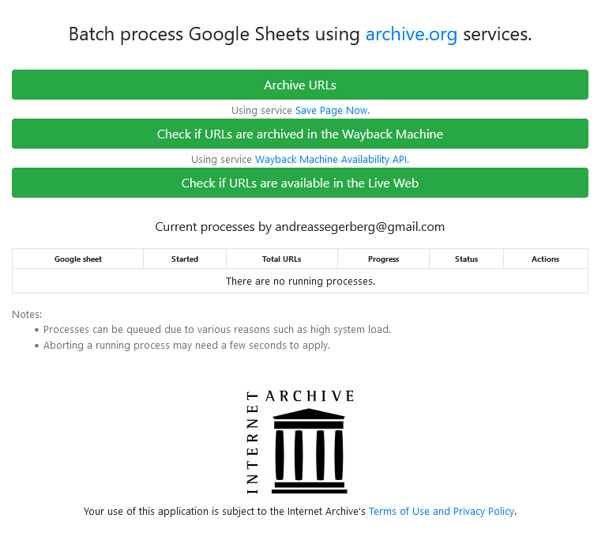
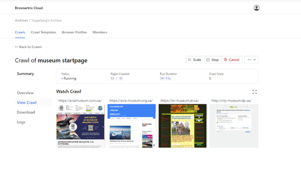
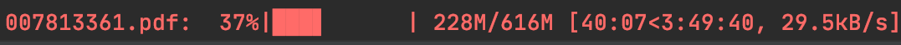
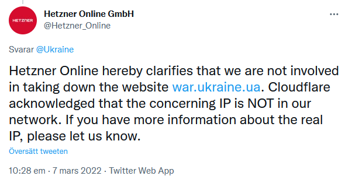
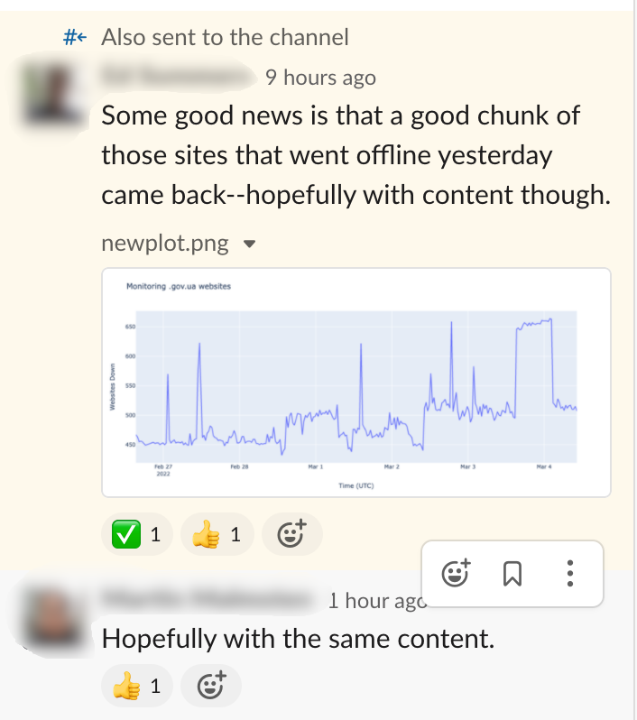
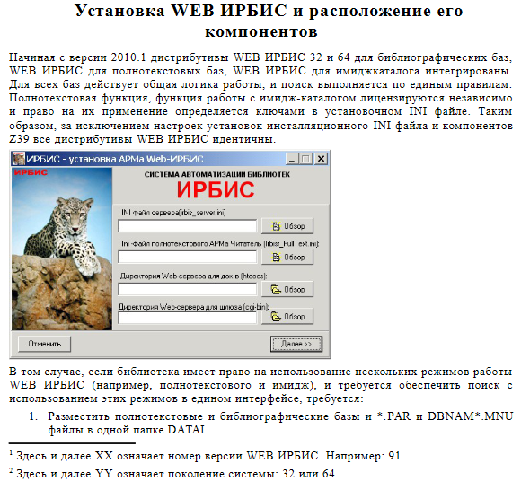
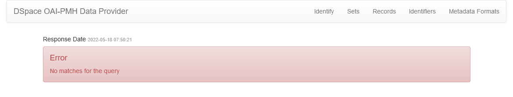
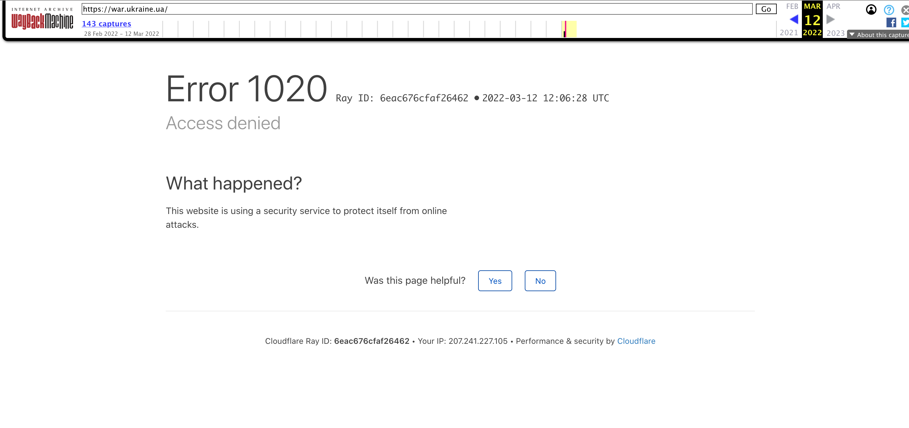
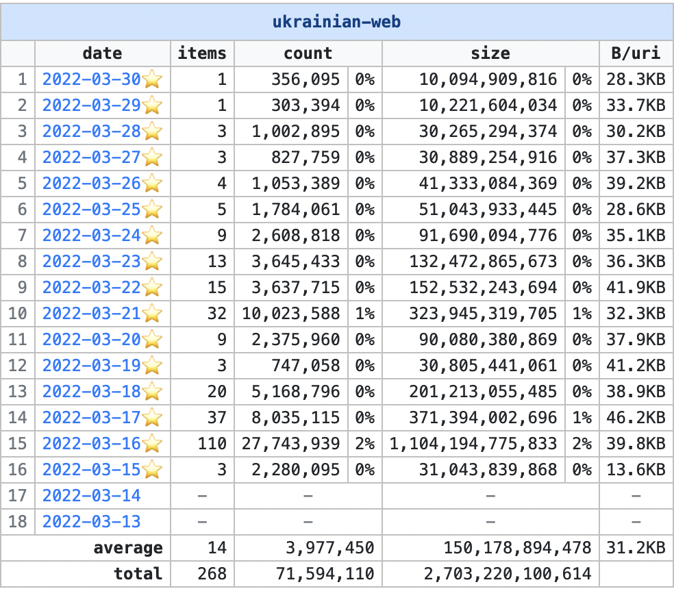
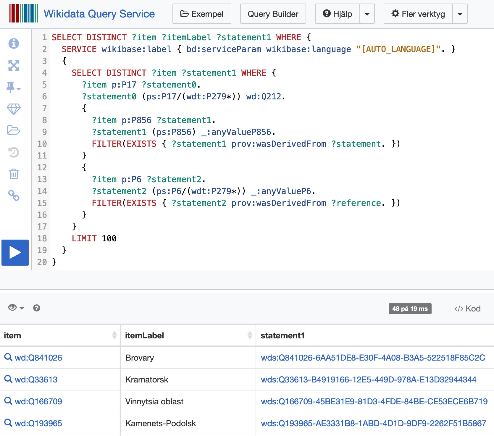

SUCHO
A global community of volunteers with the aim to help preserve Ukraine’s online cultural heritage
Andreas Segerberg
Vad gjordes under den första tiden?
Några "höjdpunkter"

Länksamlare
Registrerade volontärer har behörighet att lägga till direkt i våra register
Men vem som helst kan föreslå nya länkar via ett formulär

Internet Archive(rs)
Volontärer skickar in och säkerställer att webbsidor arkiveras i Wayback Machine.
Manuell "Inspelning"
Även om många webbplatser kan arkiveras genom automatiserade metoder finns det sidor som kräver mänsklig interaktion.

Metadata curators
Mycket material laddas upp som kopior till Internet Archive. (t.ex. PDF:er och bilder). Suchos metadatagrupp ansvarar för att upprätta metadataposter för dessa objekt.

Browsertrixare
Förutom att arkiveras hos Internet Archive gör SUCHO egna insamlingar genom browsertrix.
Scrapers
En del siter, så som bibliotekskataloger, respositorium för digitiserat material kräver ofta specialskrivna script för att kunna spara ner resurserna.

Situation monitoring
Bevakar händelseutvecklingen i kriget och hjälper till att prioritera
Dataviz wizards
Arbetar med visualisering och analyser av insamlat material och status för den ukrainska delen av internet
Uppenbara Hot
- Bomber
- Strömavbrott
- Hackerattacker
- D/DOS
 https://culturecrimes.mkip.gov.ua/
https://culturecrimes.mkip.gov.ua/
Kanske inte så uppenbara hot
Välmenande arkivarier (D/Dos)
Hosting
Arkivering av desinformation
Andra utmaningar
Språkbarriärer
Kontakter
Felkonfigurerade system
Cloudfare
Lite Statistik
Pages saved to Wayback
40+ TB scannade document, konstföremål och andra artefakter från 4,500+ Ukrainska museums, bibliotek och arkiv.

10+ TB WARC filer från 6,500+ Ukrainska myndigheter och civila organisationer
21+ TB | 740 miljoner resurser sparade från toppdomänen .ua
17.35 TB | 377 miljoner resurser sparade från nyhetssidor ukr.net
5.29 TB | 73 tusen resurser (Tv-sändningar) från suspilne
Lärdomar
Tillgång till öppen data har varit avgörande
zonefiles
En zonfil innehåller DNS-information för ett domännamn, till exempel vilken eller vilka servrar man ansluter mot för att nå motsvarande webbsida. Det finns ingen hemlig information i en zonfil, utan det som publiceras är den tekniska information som krävs för att domännamnen ska fungera.
- Domainsproject - 1.7 miljarder domäner
- Internetstiftelsen - Alla .se och .nu domäner
wikidata
open streetmaps

686 museums lokaliserade
Människor
Nästa steg
- Koordinering av donationer
- Partnerskap med myndigheter
- Långsiktig finansiering

Tack för uppmärksamheten